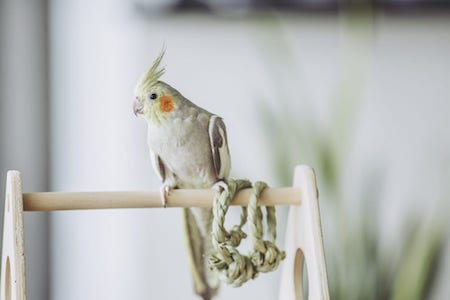
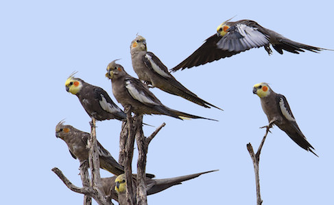

Wow! Based on your answers... You share similarities with a Cockatiel (Nymphicus hollandicus)

The Cockatiel is a funny, playful, affectionate and beautiful bird. Cockatiels can "talk" but mostly in simple words/phrases. They often genuinely enjoy being touch and will even beg their caretaker to rub the feathers behind their crest, against the grain of the feathers. They will even recognize their owner by their face and also by their voice. While loving and affectionate, Cockatiels also appreciate ambient attention. Like a Cockatiel, you are a funny, loving and playful person who just genuinely enjoys being happy and close relationships with others.
Want to learn more about this species? Click the Feather!

Click on Ceasar to Restart!